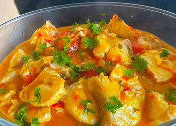

Moqueca de Peixe

Description
Moqueca de peixe is one of the most famous foods in Bahia-Brazil.
Always getting together a fresh fish, a local ingrediente: "dendê" and
the flavour of bell pepper.
Ingredients
- 4 pieces of fresh fish (700g)
- Juice of 1 lemon
- 1 big onion sliced
- 1 red bell pepper sliced
- 1 green bell pepper sliced
- 2 mature tomatoes sliced
- 2 soup spoons of cilantro
- 200ml of coconut milk
- 1 soup spoon of "dendê" oil
- 2 shrimps broth tablet
Steps
- Get the fish cleaned, drizzle with the lemon juice and let it rest for 1 hour
- In a big pan, put the fish, the onions, the bell peppers, the tomatoes and cilantro
- Mix the shrimp broth tablet with the coconut milk and drizzle the fish
- With the pan half capped, take to low heat for 20 minutes
- Stir the pan a few times until it get cooked
- Put the "dendê" oil and salt
- Remove from heat and serve